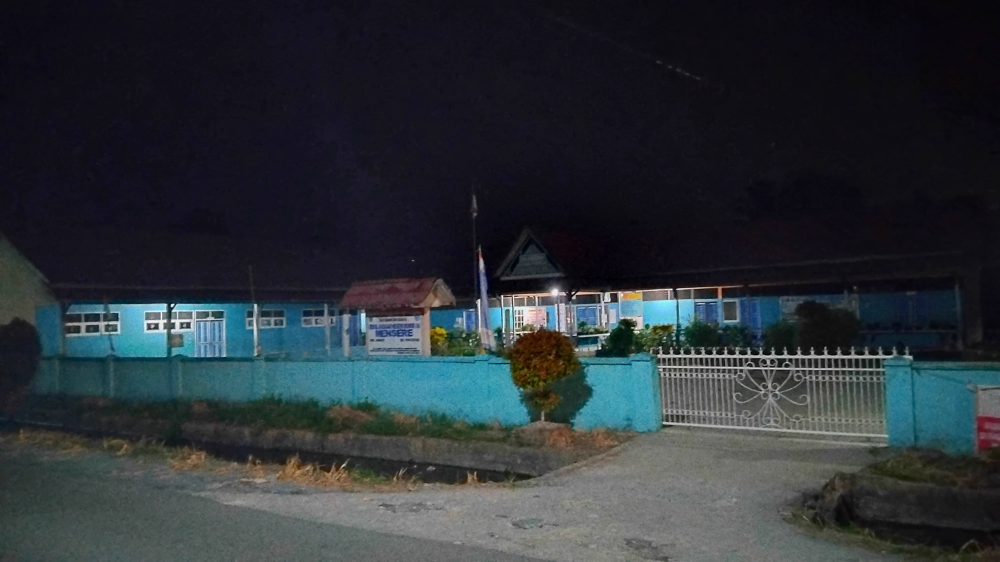

Lembaga sekolah penunjang pendidikan formal dari usia dini hingga menengah.
Dusun Lestari, Desa Mensere

Sekolah dasar negeri pusat yang menampung banyak siswa siswi di jalur utama Desa Mensere.
Dusun Bumi Asih, Desa Mensere
Dusun Bumi Asih, Desa Mensere